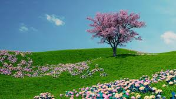

|  |
La primavera es una de las cuatro estaciones del año, que sigue al invierno y precede al verano. En el hemisferio norte, la primavera comienza alrededor del 20 de marzo y termina el 21 de junio. Se caracteriza por temperaturas más cálidas, días más largos y el florecimiento de plantas y árboles. Culturalmente, se asocia con el renacimiento, la alegría y la juventud.